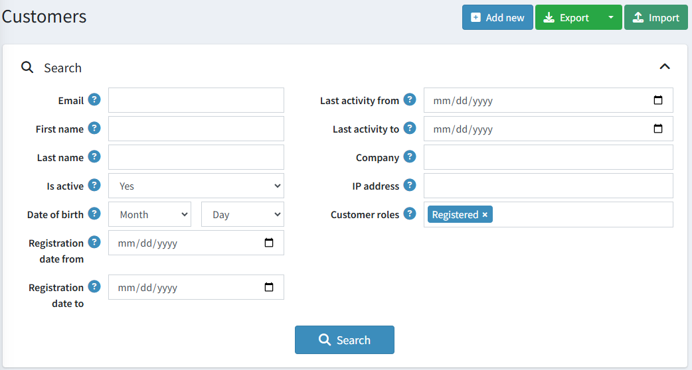
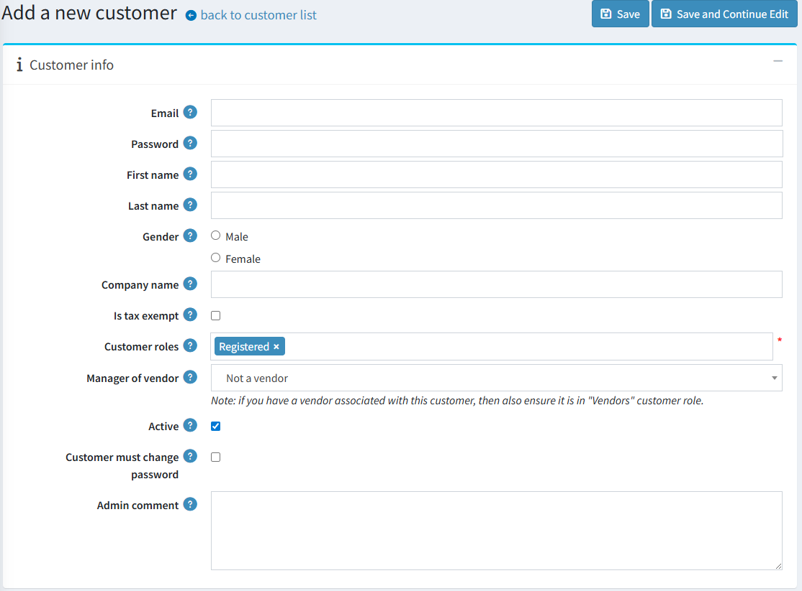
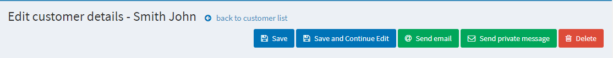
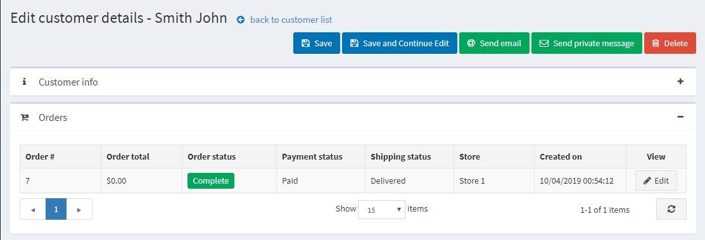
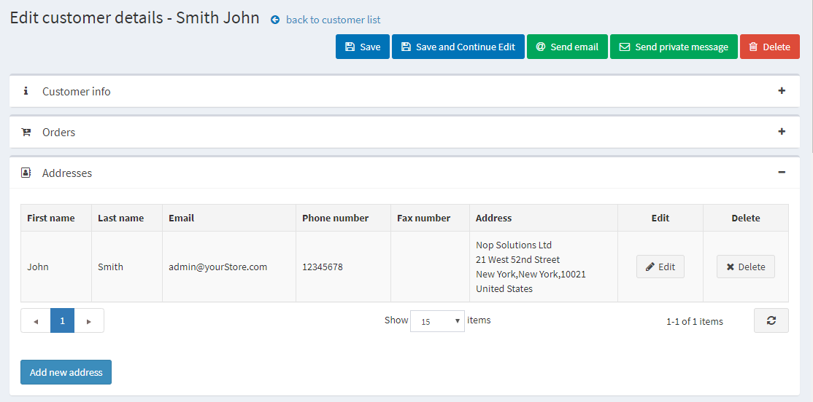
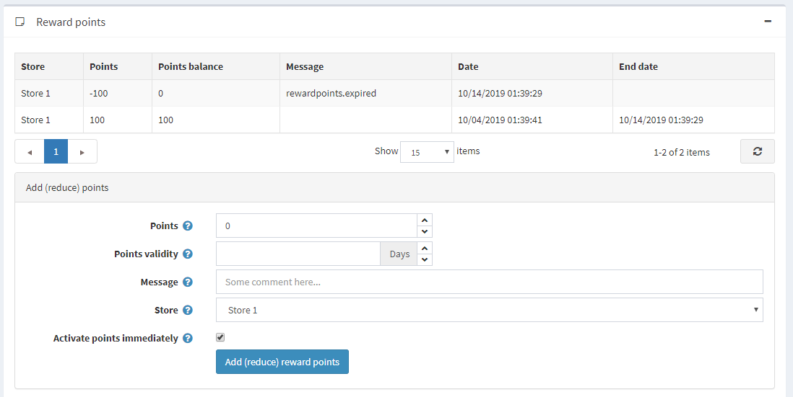

管理顧客
顧客清單包含所有現有顧客的詳細資料，並允許您新增顧客。此功能以及其他顧客管理設定，使 nopCommerce 成為具備內建 全通路功能 (omnichannel feature) 的電子商務平台。在 nopCommerce 中，顧客包含了所有使用者，例如管理員、供應商與購買者。若要管理顧客，請前往 顧客 → 顧客。屆時將顯示下列視窗：

若要搜尋顧客，請在「顧客」視窗中輸入下列一項或多項搜尋條件：
- 電子郵件 (Email)。
- 使用者名稱 (Username)，若已在 顧客設定 中啟用。
- 名字 (First name)。
- 姓氏 (Last name)。
- 啟用狀態 (Is active)。依帳戶狀態搜尋顧客。
- 出生日期 (Date of birth)，若已在 顧客設定 中啟用。
- 公司 (Company)，若已在 顧客設定 中啟用。
- 電話 (Phone)，若已在 顧客設定 中啟用。
- 郵遞區號 (Zip code)，若已在 顧客設定 中啟用。
- IP 位址 (IP address)。
- 顧客角色 (Customer roles) — 您可以選擇一或多個要顯示的顧客角色。
- 註冊日期起 (Registration date from) 與 註冊日期迄 (Registration date to)。
- 最後活動時間起 (Last activity from) 與 最後活動時間迄 (Last activity to)。
Note
您可以透過點擊 匯出為 XML (全部) 或 匯出為 Excel (全部) 將顧客資料匯出至外部檔案。您也可以透過點擊 匯出為 XML (選取) 或 匯出為 Excel (選取) 將所選的顧客資料匯出至外部檔案。
接著點擊 搜尋 (Search) 按鈕。
新增顧客
若要新增顧客，請在 Customers 視窗中點擊 Add new。 系統將會顯示 Add a new customer 視窗。請定義下列顧客詳細資料：
顧客資訊
顧客資訊 面板允許您輸入顧客的個人及帳戶資訊，例如更改密碼、指派或移除顧客角色。

您可以編輯以下欄位：
- Email 位址。
- Password（密碼）。
- First name（名字）。
- Last name（姓氏）。
- Gender（性別）。
- Date of birth（出生日期）。
- Company name（公司名稱）。
- Is tax exempt（是否免稅）指出該顧客是否免稅。
- Customer roles（顧客角色）— 單一或多個顧客角色。請注意，任何需要登入系統的角色（例如管理員、供應商）都應該具備「Registered」（已註冊）顧客角色。您可以在 顧客角色 區段中設定顧客角色。
- 在 Manager of vendor（供應商管理員）下拉式清單中，若有需要，請選擇與此顧客帳戶相關聯的供應商。建立關聯後，該顧客將能夠登入所選供應商的入口網站，並管理其商品與訂單。請注意，如果您將某個供應商與此顧客關聯，則應確保此顧客記錄已包含在 供應商 清單中。
- 勾選 Active（啟用）核取方塊以啟用該顧客。
- Customer must change password（顧客必須變更密碼）— 勾選此項以要求顧客變更密碼。
- Admin comment（管理員備註）— 若有需要，供內部使用的管理員備註。
點擊 Save（儲存）按鈕以儲存變更，或點擊 Save and continue edit（儲存並繼續編輯）按鈕以繼續編輯更多顧客資訊。在這種情況下，您將會在顧客詳細資料頁面看到新增加的面板。
您也會看到 Send email（發送電子郵件）、Send private message（發送私人訊息，若已啟用 論壇 功能）以及 Delete（刪除）按鈕。

點擊 Send email 按鈕後，會顯示 發送電子郵件 視窗，讓商店擁有者可以發送郵件給顧客。點擊 Send private message 按鈕後，會顯示 發送私人訊息 視窗，讓您可以發送訊息給顧客。若要使用私人訊息功能，請在 論壇設定 中允許私人訊息功能。
訂單
在 Orders 面板中，您可以檢視顧客的訂單詳情。

地址
在 地址 面板中，您可以檢視、編輯並建立顧客的新地址。

點擊 新增地址 按鈕來新增一個顧客地址。填寫適當的欄位後點擊 儲存。新的地址將會新增至該顧客名下。
目前購物車與願望清單
在「目前購物車與願望清單」面板中，您可以檢視顧客的購物車與願望清單。
活動記錄
在「活動記錄」面板中，您可以檢視顧客的活動記錄。請參閱 活動記錄 - 顧客活動類型 章節，了解如何管理活動類型。
下單（模擬顧客）
在「下單（模擬顧客）」面板中，商店經營者可以在無需顧客密碼的情況下為其建立訂單。這對於不想註冊的顧客，或是大型網站透過客戶服務代表（CSR）以電話協助下單的情況非常實用。
此面板包含一個 下單 按鈕。點擊此按鈕後，您將被重新導向至前台網站。選擇顧客想要的商品，並像顧客在前台網站操作一樣將其加入購物車，接著使用 結帳 按鈕完成一般的結帳流程，最後點擊頁面頂端的 結束工作階段 連結以結束此工作階段。
補貨通知訂閱
在「補貨通知訂閱」面板中，可以查看顧客所訂閱的商品。
紅利點數
在「紅利點數」面板中，商店擁有者可以為顧客新增紅利點數，或是檢視他們的紅利點數使用記錄。當紅利點數計畫啟用時，此面板才會顯示。欲知更多資訊，請參考 紅利點數 章節。
新增（減少）點數

在此面板中：
- 輸入 點數 數量。若要減少點數，請輸入負值。
- 在 點數有效期限 欄位中，指定所獲點數的有效天數（僅適用於正數點數）。
- 輸入 訊息 或註解。
- 若您希望顧客在獲得紅利點數後立即使用，請勾選 立即啟用點數 核取方塊。若您未勾選此核取方塊，將會出現另一個選項：
- 若前一個核取方塊未勾選，請在 紅利點數啟用 欄位中，指定紅利點數啟用所需的時間週期（天數/小時數）。